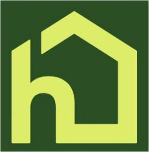

Trade Mark Journal No.2025/044 31 October 2025
WO0000001881290 (9,41,42,44,45)
Office of origin: United States of America
Date of International Registration:4 August 2025
Date of designation in the UK:
4 August 2025

The mark consists of a stylized light green letter "H" where the right leg of the "H" extends out and up to form the design of a frame of a house. This is set against a dark green background that is claimed as a feature of the mark.
The mark contains the colours Light green and dark green.
The mark consists of a stylized light green letter "H" where the right leg of the "H" extends out and up to form the design of a frame of a house. This is set against a dark green background that is claimed as a feature of the mark.
International priority date claimed: 4 February 2025
(United States of America)
(99028691)
- Class 9
- Downloadable mobile applications for planning, organizing, coordinating, arranging for and assisting with the performance of daily tasks and necessary services, namely, transportation, meal preparation, bathing, dressing, medication reminders, medication management, medication administration, home repairs, cooking, and cleaning; downloadable mobile applications for planning, organizing, coordinating, arranging for and assisting with the performance of daily tasks and necessary services, namely, transportation, meal preparation, bathing, dressing, medication reminders, medication management, medication administration, home repairs, cooking, and cleaning in the field of home care and personal care services; downloadable software for home care and personal care givers in the field of home care and personal care services for aging adults, the elderly, disabled, and home-bound individuals; downloadable software for the provision of home care, companionship care, and day care services; downloadable software for the provision of home care, companionship care, and day care services for aging adults, the elderly, disabled, and home-bound individuals; downloadable software for planning, organizing, coordinating, arranging for and assisting with the performance of daily tasks and necessary services; downloadable software for planning, organizing, coordinating, arranging for and assisting with the performance of daily tasks and necessary services, namely, transportation, meal preparation, bathing, dressing, medication reminders, medication management, medication administration, home repairs, cooking, and cleaning; downloadable software for home care and personal care givers for monitoring and tracking care of aging adults, the elderly, disabled and home-bound individuals; downloadable software for matching service providers with aging adults, the elderly, disabled, and home-bound individuals for the provision of personal care and home care services; downloadable software for matching service providers with individuals in the fields of personal care, home care services, transportation, meal preparation, bathing, dressing, medication reminders, medication management, medication administration, home repairs, cooking, and cleaning; downloadable software for monitoring and tracking care of aging adults, the elderly, disabled and home-bound individuals, and for preparing reports regarding the foregoing; downloadable software for providing educational information and tools in the fields of health, healthcare, disease management, geriatrics, home care, aging, wellness, wellness for aging adults, cognitive diseases, chronic conditions, and caring for the aging, elderly, disabled, and home-bound individuals; downloadable reports in the field of monitoring and tracking care and progress of aging adults, the elderly, disabled and home-bound individuals;.
- Class 41
- Education services, namely, the online publication of blogs and providing a website featuring blogs and non-downloadable articles in the fields of health, healthcare, disease management, geriatrics, home care, aging, wellness, wellness for aging adults, cognitive diseases, chronic conditions, and caring for the aging, elderly, disabled, and home-bound individuals; providing educational information in the field of home care for aging adults, the elderly, disabled and home-bound individuals and distribution of educational materials in connection therewith; providing entertainment information via a website; education services, namely, conducting educational programs in the fields of home care and personal care services for aging adults, the elderly, disabled, and home-bound individuals and distribution of educational materials in connection therewith; education services, namely, conducting educational programs for aging adults, the elderly, disabled, home-bound individuals, and their families in the field of health, healthcare, disease management, geriatrics, home care, aging, wellness, wellness for aging adults, cognitive diseases, chronic conditions, and caring for the aging, elderly, disabled and home-bound individuals and distribution of educational materials in connection therewith; educational and entertainment services, namely, conducting programs featuring recreational activities, art events, and cultural events for the aging, elderly, disabled, and home-bound individuals; educational services, namely, conducting classes, seminars, workshops in the fields of health, healthcare, disease management, geriatrics, home care, aging, wellness, wellness for aging adults, cognitive diseases, chronic conditions, and caring for the aging, elderly, disabled, and home-bound individuals; educational services, namely, providing classes, seminars, workshops, and presentations dealing with issues of concern for caregivers, partners, and families of the chronically ill and/or disabled; organization of social entertainment events.
- Class 42
- Software as a service (SaaS) services featuring software for the provision of home care, companionship care, and day care services for aging adults, the elderly, disabled, and home-bound individuals; platform as a service (PaaS) featuring computer software platforms for the provision of home care, companionship care, and day care services for aging adults, the elderly, disabled, and home-bound individuals; software as a service (SaaS) services featuring software for home care and personal care givers for planning, organizing, coordinating, arranging for and assisting with the performance of daily tasks and needed services for the elderly, disabled, aging and home-bound individuals; software as a service (SaaS) services featuring software for matching service providers with aging adults, the elderly, disabled, and home-bound individuals for the provision of personal services and home care services; software as a service (SaaS) services featuring software for matching service providers with individuals in the fields of personal care, home care services, transportation, meal preparation, bathing, dressing, medication reminders, medication management, medication administration, home repairs, cooking, and cleaning; software as a service (SaaS) services featuring software for monitoring and tracking care of aging adults, the elderly, disabled and home-bound individuals, and for preparing reports regarding the foregoing; software as a service (SaaS) services featuring software for providing educational information and tools in the fields of health, healthcare, disease management, geriatrics, home care, aging, wellness, wellness for aging adults, cognitive diseases, chronic conditions, and caring for the aging, elderly, disabled, and home-bound individuals; software as a service (SaaS) services featuring software for accessing and generating reports in the field of care for aging adults, the elderly, disabled and home-bound individuals; providing online non-downloadable software for the provision of home care, companionship care, and day care services for aging adults, the elderly, disabled, and home-bound individuals in the field of home care and personal care services; providing online non-downloadable software for the provision of home care, companionship care, and day care services; providing online non-downloadable software for the provision of home care, companionship care, and day care services for aging adults, the elderly, disabled, and home-bound individuals; providing online non-downloadable software for planning, organizing, coordinating, arranging for and assisting with the performance of daily tasks and necessary services; providing online non-downloadable software for planning, organizing, coordinating, arranging for and assisting with the performance of daily tasks and necessary services, namely, transportation, meal preparation, bathing, dressing, medication reminders, medication management, medication administration, home repairs, cooking, and cleaning; providing online non-downloadable software for home care and personal care givers for planning, organizing, coordinating, arranging for and assisting with the performance of daily tasks and necessary services, namely, transportation, meal preparation, bathing, dressing, medication reminders, medication management, medication administration, home repairs, cooking, and cleaning; providing online non-downloadable software for matching service providers with aging adults, the elderly, disabled, and home-bound individuals for the provision of personal services and home care services; providing online non-downloadable software for matching service providers with individuals in the fields of personal care, home care services, transportation, meal preparation, bathing, dressing, medication reminders, medication management, medication administration, home repairs, cooking, and cleaning; providing online non-downloadable software for monitoring and tracking care of aging adults, the elderly, disabled and home-bound individuals, and for preparing reports regarding the foregoing; providing online non-downloadable software for providing educational information and tools in the fields of health, healthcare, disease management, geriatrics, home care, aging, wellness, wellness for aging adults, cognitive diseases, chronic conditions, and caring for the aging, elderly, disabled, and home-bound individuals; providing online non-downloadable software for accessing and generating reports in the field of care for aging adults, the elderly, disabled and home-bound individuals.
- Class 44
- Health care; home health care services; health care services for aging adults, the elderly, disabled, and home-bound individuals; home health care services for aging adults, the elderly, disabled, and home-bound individuals; health care in the form of nurse-directed care; health care in the form of nurse-directed care for aging adults, the elderly, disabled, and home-bound individuals; nursing care; nursing home services; home-visit nursing care; hospice support services; hospice support services for aging adults, the elderly, disabled, and home-bound individuals; home nursing aid services; providing information in the field of health care, home health care, medical-related personal care services, and medical in-home care services for aging adults, the elderly, disabled, and home-bound individuals; therapeutic intervention services incorporating dance, music, and movement; consulting services in the field of health and healthcare; massage therapy services; physical examination services; medical information services provided via the internet; provision of health information; speech and hearing therapy services; health assessment services; physical rehabilitation; hair care services; mental health services; providing news and information in the field of geriatric healthcare, healthcare, disease management, home health care, healthcare related to aging, wellness, wellness for aging adults, cognitive diseases, and chronic conditions, and caring for the aging, elderly, disabled, and home-bound individuals; administering vaccines to patients; nutrition counseling; medical counseling; physical therapy; wellness and health-related consulting services; providing information in the field of home health care services via a website.
- Class 45
- Social services, namely, companionship services for aging adults, the elderly, disabled, and home-bound individuals; non-medical in-home personal care services for assisting with daily living activities of aging adults, the elderly, disabled, and home-bound individuals; personal care and support services, namely, assisting with daily living activities for aging adults, the elderly, disabled, and home-bound individuals; in-home personal support services, namely, assisting with daily living activities for aging adults, the elderly, disabled, and home-bound individuals; provision of non-medical personal care, personal support, home care, and companionship care, services for assisting with daily living activities of aging adults, the elderly, disabled, and home-bound individuals; provision of non-medical personal care, personal support, home care, and companionship care services for aging adults, the elderly, disabled, and home-bound individuals; providing non-medical in-home care services for assisting with daily living activities of individuals; providing non-medical in-home care services for aging adults, the elderly, disabled, and home-bound individuals; providing non-medical in-home personal care services for assisting with daily living activities of aging adults, the elderly, disabled, and home-bound individuals; providing non-medical in-home personal care and assistance services to individuals in the nature of planning, organizing, coordinating, arranging for and assisting with the performance of daily tasks and necessary services; providing non-medical in-home personal care and assistance services in the nature of bathing, medication management, medication notifications and reminders, medication administration; in-home support services in the nature of assisting aging adults, the elderly, disabled, and home-bound individuals with daily living activities; in-home support services to aging adults and the elderly, namely, geriatric care management services; in-home support services to aging adults and the elderly in the nature of the coordination of necessary services and personal care; in-home support services, namely, coordination of personal care for aging adults, the elderly, disabled, and home-bound individuals; personal social support services in the nature of assisting with daily living activities of aging adults, the elderly, disabled, and home-bound individuals; providing information in the field of non-medical in-home care services for aging adults, the elderly, disabled, and home-bound individuals; personal concierge services for others comprising making requested personal arrangements and reservations, running errands and providing customer specific information to meet individual needs, all rendered in residential complexes and homes; providing information in the field of in-home personal care services via a website.
Home Instead, Inc.
Representative: KNOBBE MARTENS OLSON & BEAR, LLP KNOBBE MARTENS OLSON & BEAR, LLP, 2040 MAIN STREET, 14TH FLOOR, IRVINE CA 92614, UNITED STATES OF AMERICA